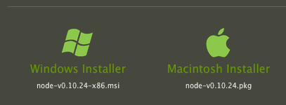

Workflow for the Wary
UX Dev Summit 2014
Made by Lyza Danger Gardner / @lyzadanger
1999
I Broke up with Javascript
(We've since made up)
I committed a directory called
HTDOGS
to our CVS repository at work
HTDOGS
HTTP +
Dogs?

HTDOGS
HTDOCS
(HTTP + DOCUMENTS)

This is not how I felt
This is how I felt
CVS: Weird, brittle, Byzantine
But our workflow was confounding
the mysterious temple of the sysadmin
"Excuse me...um?"

The frenzy that ensued felt about like DEFCON 2
The experience left me wary
The Times, They've Changed
Back then
- We, the engineers;
- Wrote code and markup;
- Carefully committed to CVS;
- Using commands from the sysadmins;
- And then...we were done?
We embarked on a web journey
The word developer entered our lexicon
Less separation of concerns
No longer can we throw everything over the wall

Instead, we are increasingly expected to take charge
But...the wariness...the vagueness
What is a "workflow" and why do I need one?
...and maybe the whole thing makes me a little bit scared
Ideal Workflow
The orchestration of processes and tools that make things more consistent and less sucky
Popular tools for orchestrating workflows
vague and abstract at first...
Orchestrating Components
- Package management
- Scaffold
- Task runner, build
Task Runner
"Weird and hard"
Grunt for People Who Think Things Like Grunt are Weird and Hard
by Chris Coyier
The hard
Grunt is node!
Node is weird!
SASS is ruby!
That sounds hard!
The Weird
What does it do?
Solving the "Hard"
Do you have five minutes?
Install Node!
Install NPM!
Install Grunt...well, sorta
$ npm install -g grunt-cliThis actually installs the grunt CLI, not grunt itself.
Install Ruby?
Possibly not...
$ \curl -sSL https://get.rvm.io | bash -s stable —rubyOne liner: Installs RVM, installs stable ruby
Once more, with feeling
- Install node by clicking on a button
- Install the grunt cli:
$ npm install -g grunt-cli - Install ruby via a ruby version manager if you need to:
$ \curl -sSL https://get.rvm.io | bash -s stable —ruby
Once node and grunt are installed, you're already set up to consume many workflows.
That's super and all
But what does it do?
Let's get self-referential
The workflow for reveal.js
Working with reveal.js
- Compile SASS for themes
- Minify CSS
- Clean up/check JavaScript (linting)
- Build and package presentation as an archive
- Run the presentation on a local web server
- Run automated tests
The contributors to reveal.js defined grunt tasksto take care of all of these workflow components.
- Saves us time and headache—easy to get up and running (less suck)
- Ensures the building, packaging, testing and optimizing code happens in the same way (more consistency).
Less suck, drudgery and sadness
More consistency
A good workflow brings joy to your team by emphasizing the "yay" moments and de-emphasizing the misery
We're ready to go
Using defined grunt workflows
- Clone repository
- npm install
- Run tasks
Using reveal.js' grunt workflow
$ git clone git@github.com:hakimel/reveal.js.git
$ cd reveal.js
$ npm install
$ grunt [task]
Tasks defined for reveal.js
defaultservethemespackagetest$ grunt serveHow?
Grunt =
Gruntfile + package.json + grunt-cli
How do we get to here?
$ grunt [task]Gruntfile
- Configure and define ("register") grunt tasks
- Load the needed grunt plugins for your tasks
Gruntfile
Define ("register") grunt tasks
gruntfile.js
Gruntfile
Configure grunt tasks
gruntfile.js
package.json
- JSON data of project module metadata
- Includes
for gruntdevDependencies - Those dependencies get installed when you run
$ npm install
package.json
Using grunt workflows
- Clone repository
- npm install (package.json)
- $ grunt [task] (gruntfile.js)
A Good Workflow...
- is easy to understand
- is easy to share
- is easy to set up
More consistency
Less suck
How we ended up here
People
Collaboration
Social coding
Distributed teams
Development methodologies
Continuous integration
Respect and reverence for the build
Agility
More complexity to corral
Workflow orchestration processes have evolved, standardized, simplified
Less Wary, More Confident
I'm a n00b, too
In fact, that's why I'm here
Here's why you can do this
- There are different levels of involvement
- It's easier now
- A lot of people like you are doing it, too
Facing the challenges
Yikes: Abstract Concepts
Calm: Some Tips
- Get your hands all dirty
- Set aside time
- Talk to someone who knows more
Yikes: New ("Hard") Technologies
Calm: Some Tips
- Learn the vital nuggets: version control, JSON
- Don't panic about the rest
But... There's so much to learn :*(
Calm: Some Tips
- Engage in just-in-time learning
- What you need to know versus what you can reference
Hmmmm... Where do I start? What if I get stuck?
Calm: Some Tips
- Lean on documentation
- Lean on examples
- Lean on those who have gone before
- Start simple
Gulp. What if everything goes terribly wrong?
Calm: Some Tips
- The risks are probably less than you think
- Continue building a technical safety net
- Rely on your team